원거리 미니언이 공격 범위를 무시하고 붙는 현상
MoveTo 완료 반경과 Decorator 판정 기준이 다르다는 점을 확인하고 Range + MinDist 기준으로 통일했습니다.
UE5 C++ Action Combat Prototype
Unreal Engine 5와 C++로 제작한 3D 액션 전투 프로토타입입니다. DataAsset 기반 스킬 시스템, AnimNotifyState 전투 판정, Behavior Tree AI, 팀 기반 미니언 스포너와 전투 UI를 직접 구현했습니다.

01 Project Overview
스킬 실행, 전투 판정, AI 의사결정, 팀 기반 스포너 흐름을 C++ 컴포넌트와 Unreal 에디터 데이터로 연결했습니다.
입력, 스킬 데이터, 애니메이션 Notify, 데미지, UI 갱신을 하나의 실행 파이프라인으로 연결했습니다.
AI Perception, 어그로, Blackboard, Behavior Tree를 이용해 타겟 우선순위와 Spawner 목적지를 분리했습니다.
MoveTo 도달 판정, IsInRange 거리 기준, NavMesh 목표점 문제를 추적해 Spawner 공격 루프를 안정화했습니다.
02 Combat Pipeline
입력 이벤트가 SkillComponent로 전달되고, 스킬 데이터 검증, 몽타주 재생, Notify 판정, 데미지 적용, UI 갱신 순서로 처리됩니다.
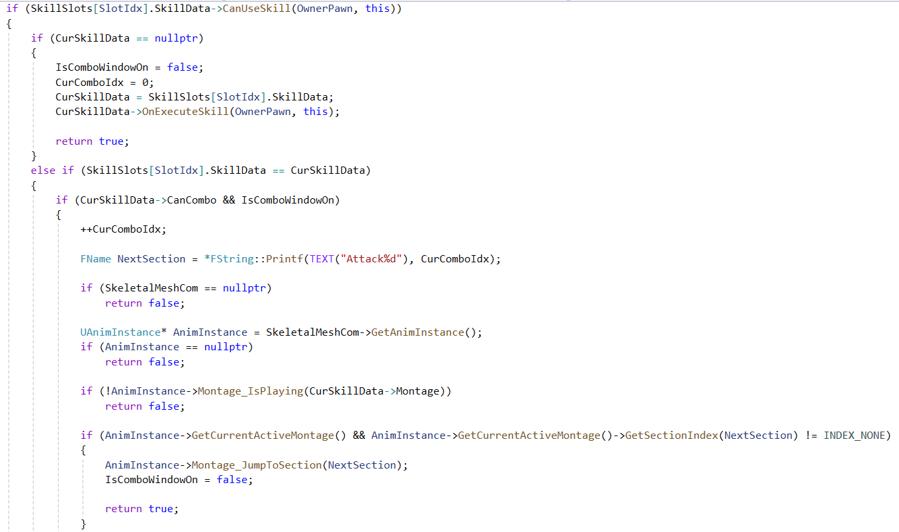
03 Skill Types
근접, 투사체, 광역, Shield 버프를 같은 SkillComponent 구조에 태우고, 타입별 차이는 데이터와 하위 실행 로직으로 분리했습니다.


04 Skill Data & Animation
스킬 데이터는 에디터에서 조정하고, 공격 판정 타이밍은 AnimNotifyState에서 제어해 코드와 데이터의 책임을 나눴습니다.
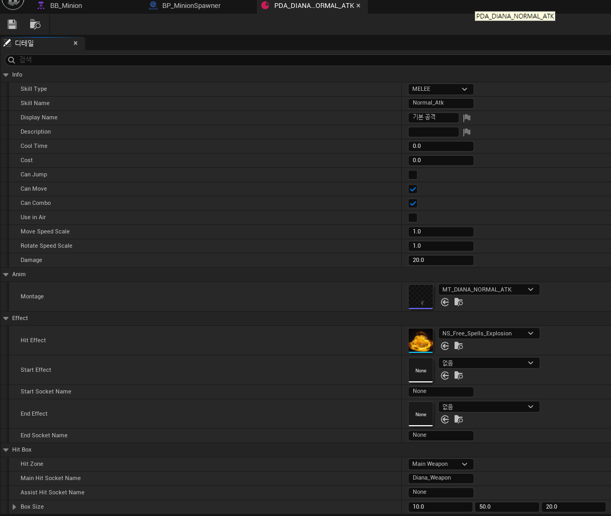
스킬마다 별도 클래스를 늘리는 대신, 공통 실행 흐름은 SkillComponent에 두고 스킬별 차이를 DataAsset으로 분리했습니다.
공격 판정 구간과 콤보 입력 가능 구간을 몽타주 타이밍에 맞춰 제어해 애니메이션과 전투 로직을 연결했습니다.
05 UI And Feedback
스탯 변경, 스킬 쿨타임, 피격 상태를 UMG와 Dynamic Material Instance에 연결해 전투 상황을 즉시 확인할 수 있도록 했습니다.
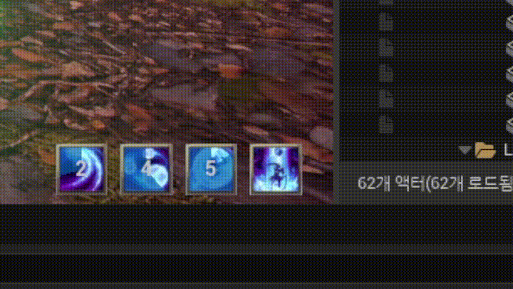
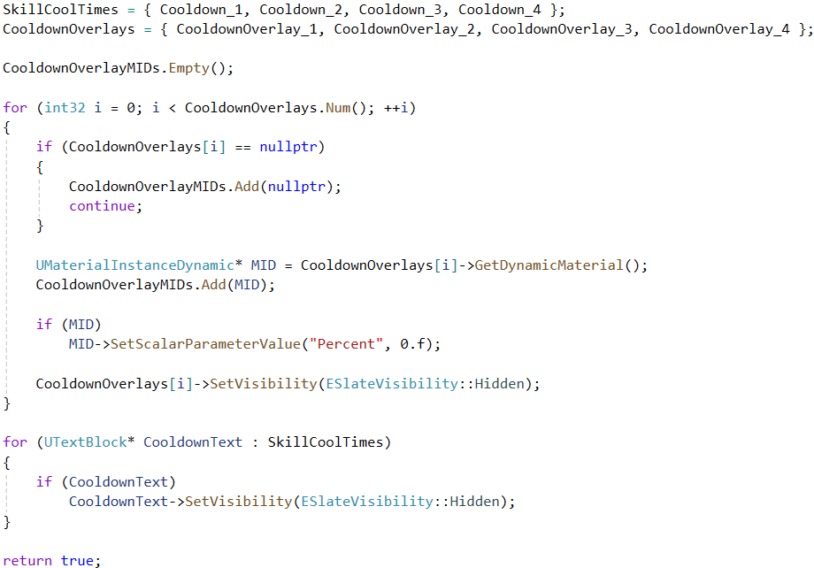
06 Monster AI
감지와 피격 자극을 바탕으로 어그로를 계산하고, Behavior Tree에서 타겟 선택, 이동, 회전, 스킬 사용을 분리했습니다.
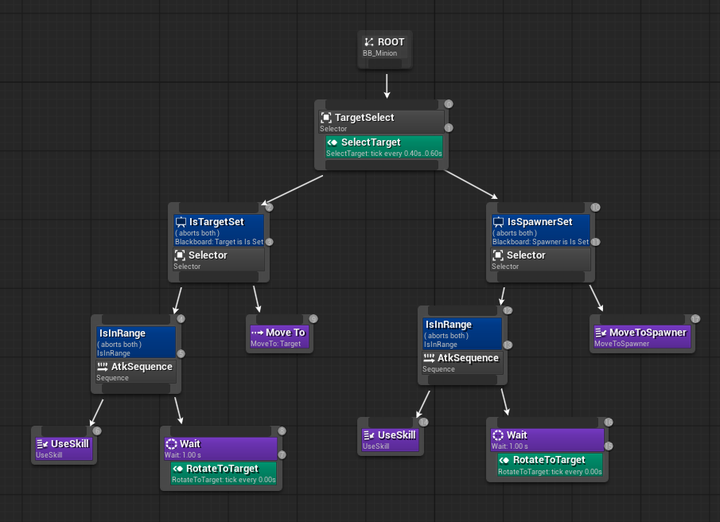

07 AI Range Debugging
원거리 미니언이 사거리보다 가까이 붙거나 Spawner 주변을 맴도는 문제를 MoveTo 완료 반경, Decorator 조건, 목표 위치의 높이 차이로 분해했습니다.
3D 거리 계산이 Spawner와 미니언의 높이 차이를 포함해 실제 지상 공격 거리보다 멀게 판정했습니다.
거리 판정을 Dist2D <= Range + MinDist 기준으로 통일하고 MoveTo goal과 완료 거리를 분리했습니다.
BT 에셋은 공유되므로 미니언별 Range는 노드 멤버가 아니라 Blackboard 또는 NodeMemory에서 관리합니다.
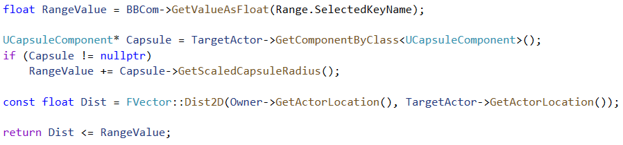
MoveToSpawner Task는 실제 이동 목표를 Spawner 위치로 유지하고, TickTask에서 Range + MinDist 안에 들어오면 이동을 중단해 Success를 반환합니다. Decorator도 같은 기준을 사용해야 다음 노드인 UseSkill로 자연스럽게 전환됩니다.
08 Team Spawner
스폰할 몬스터 클래스, 최초 스폰 시간, 반복 딜레이를 데이터로 설정하고 생성된 몬스터 AI가 상대 팀 Spawner를 목적지로 삼도록 연결했습니다.


스포너는 단순 생성 Actor가 아니라 팀 기반 전투 흐름의 목적지입니다. 주변에 적이 없을 때 미니언은 상대 Spawner를 Blackboard에 저장하고 이동합니다.
09 Spawner Code
미니언 Spawn, 팀 지정, AIController Objective 전달을 Spawner 생성 흐름 안에서 처리합니다.
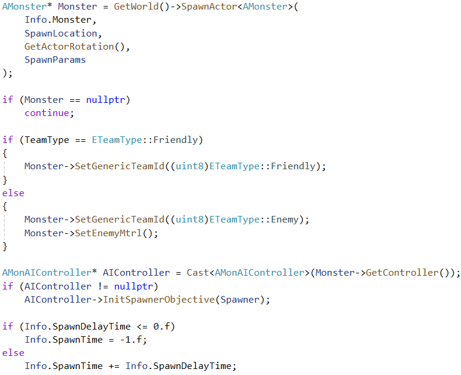
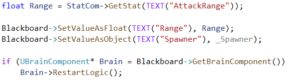
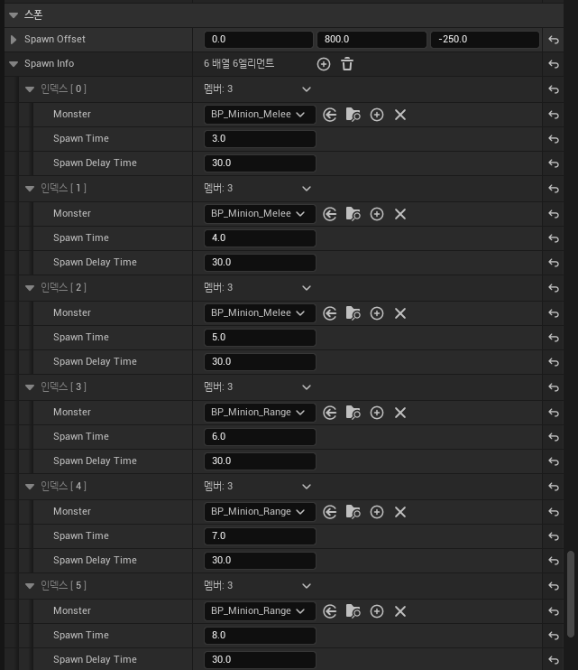
10 MoveToSpawner Task
기본 MoveTo 노드 대신 Spawner 공격 루프에 맞춘 Task를 만들고, 목표 위치와 완료 거리 기준을 분리했습니다.
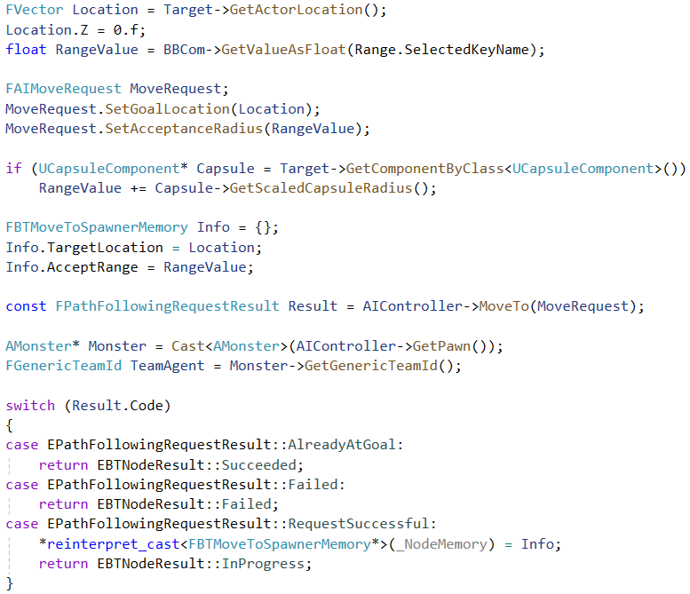
11 MoveToSpawner Finish Condition
Task 완료 조건과 Decorator true 조건이 같은 기준을 사용하도록 맞춰, Spawner 도달 후 UseSkill로 자연스럽게 전환되도록 했습니다.
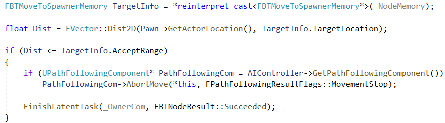
12 SkillComponent Code
스킬 슬롯, 쿨타임, 비용, 실행 상태를 검증하고, 조건을 만족하면 스킬 데이터의 실행 로직으로 넘어갑니다.
13 UI Code
스킬 슬롯별 Cooldown Overlay MID를 구성하고, UI 업데이트에서 재사용할 수 있도록 캐싱합니다.
14 Problem Solving
이동 목표, 공격 거리, 데미지 대상 필터링을 코드 흐름 기준으로 추적해 전투 루프의 안정성을 개선했습니다.
MoveTo 완료 반경과 Decorator 판정 기준이 다르다는 점을 확인하고 Range + MinDist 기준으로 통일했습니다.
BT 논리가 아니라 NavMesh 목표점 투영과 구조물 영향 문제로 원인을 좁히고 커스텀 MoveToSpawner Task로 분리했습니다.
3D 거리 계산의 Z 차이와 목표 위치 기준을 분리하고, 실제 공격 판정은 Dist2D 기준으로 처리했습니다.
Spawner는 Pawn이 아니므로 APawn 캐스팅에만 의존하지 않고 팀 판정 가능한 Actor 기준으로 확장했습니다.
ApplyRadialDamage의 Actor 배열이 피해 대상이 아니라 무시 목록임을 확인하고 이펙트 대상 탐색과 데미지 호출을 분리했습니다.
Target selection service에서 사망 상태를 제외하고 후보가 없을 때 Blackboard Target을 비워 stale target을 방지했습니다.